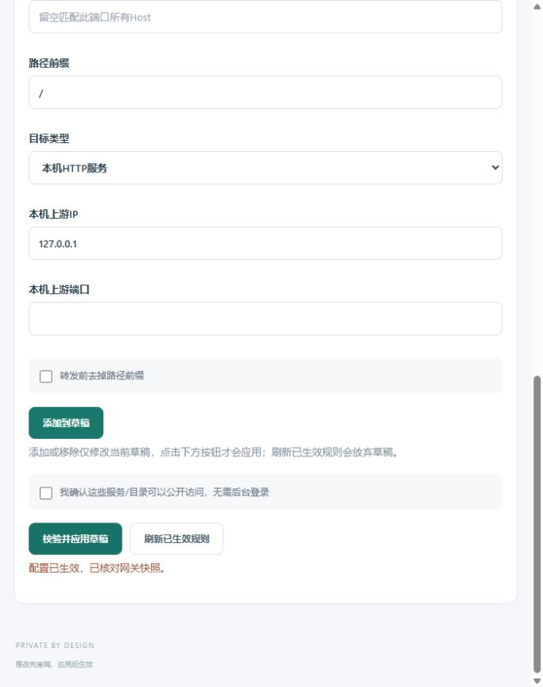

授权与范围
已直接核对Flow Analysis来源会话中的用户消息：Web只监听服务器内部端口，由Trojan Proxy将HTTPS的/flow指向该项目。只追加443上的/flow规则，目标127.0.0.1:3031；Next.js构建basePath=/flow，完整保留此前缀和查询参数，不增加公开端口、不部署额外Nginx。
接入契约
域名qin-xin.top，路径按段匹配/flow与/flow/*，strip_prefix=false，https=true。沿用现有Host和HTTPS转发头、RSC及静态资源请求语义，不重写上游Cookie或登录跳转。独立认证由Flow负责；不得使/proxy、/futures、根欢迎页或相似路径/flow-other进入Flow。
{"name":"Flow Analysis · flow 路径","port":443,"host":"qin-xin.top","path":"/flow","kind":"proxy","upstream_ip":"127.0.0.1","upstream_port":3031,"https":true,"strip_prefix":false,"browse":false}执行顺序
- 只读核对实际Web镜像、回环绑定、健康接口、登录页和匿名鉴权；确认/flow未被占用。
- 通过原管理后台的近期五分钟双因素会话追加规则，保留原规则。会话过期必须由所有者重新登录，不走数据库或其他写入后门。
- 验证可信HTTPS、80重定向、静态资源、匿名401、错误口令与跨来源拒绝、路径边界、原入口及容器保留，再由Flow会话独立验证正式登录与RSC。
- 当前24小时观察继续使用原PID、起始时间与探针散列；不重置或删除失败。此次路由变更作为窗口内事件记录，/flow单独验收，不冒充已被原窗口完整覆盖。
所有者重新完成近期双因素登录后，规则已通过管理后台追加为修订25。此变更使用已有网关功能，不升级镜像或重启服务。
独立准备结果
实际镜像flow-analysis:flow-bc8b353，容器健康、重启0次、无OOM；只绑定127.0.0.1:3031。健康接口200且db=ok、mode=accounts；登录页200且资源含/flow前缀，匿名API401、页面307跳至/flow/login。当前修订24，仅/futures业务规则，/flow未占用；此前后台会话过期，经所有者重新登录后已追加生效。原24小时观察仍在运行，325次采样、0失败、6轮VPN深检，起始时间和源码均未变。
已应用及公网验收
修订24→25，仅追加/flow保留前缀规则；原规则、管理设置和监听一致。代理、VPN、Flow及期货Web容器身份/启动时间均保留。等待双因素登录期间，发现其他项目futures-forward于北京时间21:56更新一个容器，早于此次22:19左右应用路由；已单独记录，不声称所有容器完全未变。其余容器逐项一致。可信TLS、健康、登录页、9个静态资源、匿名API401、页面307回/flow/login、错误口令401、跨来源403且均不签发会话Cookie、80跳转保留路径及查询均通过。根页、/flow-other、/proxy内容与变更前一致，/futures登录页仍200。正式登录与RSC由Flow会话独立验收，不以匿名探针代替。
原长稳窗口与源码保留，检查时353次采样、0次失败；不重置、不删样本，也不声称新/flow被原窗口完整覆盖。
